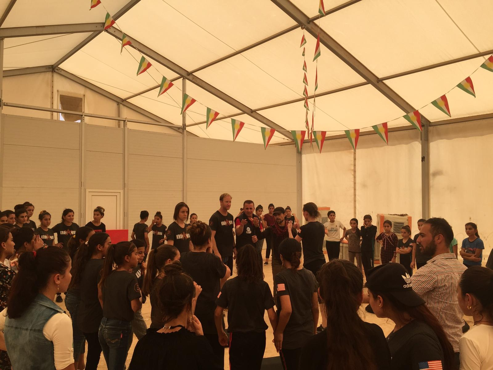

About Us
How a single mission to a refugee camp in Northern Iraq became the foundation of an organization.
How It Started
In the summer of 2018, a small team of self-defense instructors traveled to a refugee camp in Northern Iraq, home to 15,000 Yazidi internally displaced persons, to teach self-defense to women and girls who had survived unimaginable atrocities at the hands of ISIS.
The Yazidi people had been targeted for genocide. An estimated 5,000 men were massacred; approximately 7,000 women and girls were abducted into sexual slavery. Thousands remained missing. Those who escaped carried profound physical and psychological wounds.
Over two weeks, the team taught self-defense, a practical no-rules discipline, to hundreds of Yazidi women and girls ranging in age from five to eighteen. On the first day, 20 students showed up. By the third day, 90.

Northern Iraq, 2018
"I feel powerful. The main reason why I want to learn is for the future. If someone wants to enter inside my tent with a knife to kill us, we can defend ourselves."
17-year-old Yazidi survivor, abducted at age 14, held in captivity for three and a half years. Northern Iraq, 2018.One 17-year-old survivor, who had been abducted at age 14 and endured three and a half years in captivity, summed up what the training meant to her. Her words became the heart of everything this organization stands for.
This organization exists to continue and expand that model, ensuring that every community we serve develops its own trained, capable coaches who can not only continue the training, but thrive as leaders and inspirations.
Who We Are
The Safety and Leadership Alliance is a trauma-informed women's personal safety, confidence, and leadership program. We train local women coaches in conflict-affected communities to preserve and maintain capability after the foreign instructors leave, ensuring that our work outlives our presence.
We equip women and girls in conflict-affected communities with personal safety skills, confidence, and local leadership capability.
Declaration of Intent
This organization was born from a conviction that self-defense is not just a physical skill. It is a reclamation of dignity, agency, and hope. We believe that every woman and girl deserves the tools to protect herself, the confidence to lead, and a community that sustains those capabilities without outside help.
Continue the Mission
Your support funds training missions, travel for instructors, and the certification of local coaches who sustain the work after we leave.